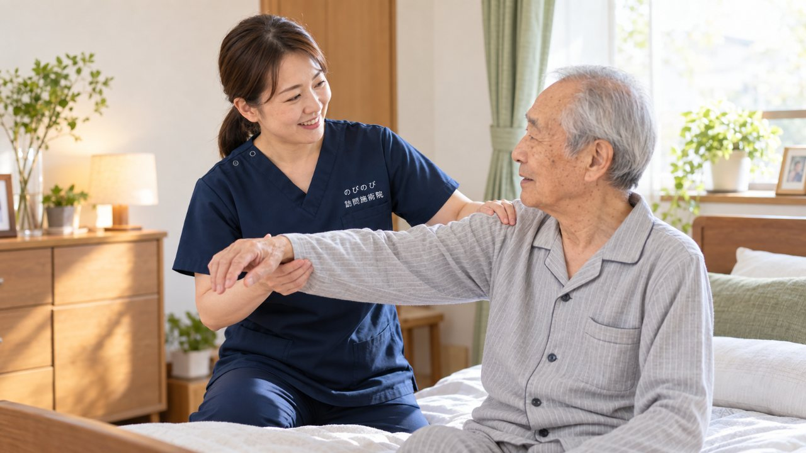

腕を上げると肩の奥が痛む、肩を動かすとゴリゴリと音がする、着替えや洗髪がつらい。こうした症状の背景には、肩関節の軟骨がすり減る変形性肩関節症が関わっていることがあります。五十肩や腱板の傷みとは経過が異なり、原因の見きわめは整形外科などの医師の役割です。そのうえで、痛みをかばって固くなった肩・首・肩甲骨まわりをゆるめる部分は、ご自宅にうかがう鍼灸・マッサージでお手伝いできます。
この記事のポイント
原因の見きわめは整形外科などの医師の役割です。鍼灸がお手伝いできるのは、痛みをかばって固くなった肩・首・肩甲骨まわりの筋肉をゆるめ、めぐりを助けること。長引く肩の痛みについて医師が鍼やお灸を必要と認め、通院がむずかしい状態なら、はり・きゅうの医療保険の対象になる場合があります。転んだあとに強い痛みが出た、腕がまったく上がらないといったときは、まず整形外科を受診してください。
変形性肩関節症とは、どんな状態か
肩の関節は、腕の骨の先端と肩甲骨のくぼみが組み合わさってできています。この関節の軟骨が加齢や長年の負担ですり減ると、骨どうしがこすれて痛みや動かしにくさが出ます。これが変形性肩関節症です。腕を上げる・後ろに回すといった動きで痛み、進むと動かせる範囲が狭くなったり、動かすときに音がしたりします。過去のけがや、肩を酷使してきた方に起こりやすい傾向があります。
五十肩や腱板の傷みとの違い
肩の痛みには、変形性肩関節症のほかにも、いわゆる五十肩（肩関節周囲炎）や、腱板という筋肉の傷みなど、いくつかの原因があります。それぞれ経過や対応が異なるため、自己判断せず、整形外科などで肩の状態を診てもらうことが大事になります。どのタイプの肩の痛みなのかを見きわめたうえで、鍼灸にできることを一緒に考えていきましょう。まずは受診して、ご自身の肩の状態を知っておくと安心です。
すぐに医療機関へ相談したほうがよいとき
転んだり腕を強くぶつけたりしたあとに強い痛みが出た、腕がまったく上がらない・動かせない、肩が赤く腫れて熱をもっている、腕がしびれて力が入らない。こうしたときは、骨折や腱の断裂、神経のトラブルなどが隠れていることがあります。早めに整形外科を受診してください。夜も眠れないほど強く痛むときも、まず医療機関に相談しましょう。
かばう緊張が、肩や首に広がる
肩が痛むと、その肩をかばって動かさずにいるうちに、肩や首、肩甲骨のまわりの筋肉が固くこわばりがちです。使わない期間が続くと、動かせる範囲がさらに狭くなることも。めぐりが滞ると、こりや重だるさが増して感じられます。肩の関節だけでなく、首や肩甲骨まわりまで含めてこわばりをゆるめていくことが、動かしやすさを保つ助けになります。
鍼灸でできるのは、こわばりをゆるめること
訪問鍼灸マッサージがお手伝いできるのは、すり減った軟骨をもとに戻すことではなく、痛みをかばって固くなった肩・首・肩甲骨まわりの筋肉をゆるめ、めぐりを助けることです。こわばりがほどけると、肩が動かしやすく感じられたと話される方もいます。感じ方には個人差があります。鍼灸に加えて、肩や腕をやさしく動かす機能訓練も行い、痛みの程度に合わせて刺激を加減しながら進めます。
ご家庭で、力になれること
痛みの強い時期は無理に動かさず、楽な姿勢で休むことが大切です。落ち着いてきたら、肩を温めてから、痛みの出ない範囲で腕をゆっくり動かすと、こわばりの予防につながります。重い物を急に持ち上げる、腕を無理に後ろへ回すといった動作は負担になるので気をつけましょう。どこまで動かしてよいかは肩の状態で変わるので、施術のなかでも一緒に確かめていきます。
肩の痛みは、暮らしの動作に響きやすい
肩は、腕を上げる・後ろに回すといった、暮らしのさまざまな動作に関わる関節です。肩が痛むと、洗髪や着替え、洗濯物を干す、高い棚の物を取る、背中に手を回すといった、何気ない動作が一つひとつつらくなります。痛いほうの腕を使わずにいると、動かせる範囲がさらに狭くなり、反対の肩や腕にも負担がかかりがちです。そのため、痛みの強い時期は無理をせず、落ち着いてきたら少しずつ動かしていく、そのさじ加減が大切になります。
うかがっていて聞くこと
肩や背中のこわばりをほぐしたあと、体が軽くなった、腕を動かしやすく感じたと話される方がいます。一方で、変わらないとおっしゃる方もいて、感じ方には個人差があります。軟骨のすり減りそのものが変わるわけではありませんが、肩まわりの張りがゆるむことで、着替えや身のまわりの動作が少しでも楽になればと考えています。
保険と自己負担のこと
肩の慢性的な痛みについて、医師が鍼やお灸を必要と認め、通院がむずかしい状態であれば、はり・きゅうの医療保険が使える場合があります。1回の総額は3,950円で、自己負担は負担割合に応じた分だけです。1割の方でおよそ395円が目安です。あらかじめ金額が決まっているので、費用の見通しを立てやすいと思います。対応エリア内であれば出張費は別にかからず、集金は月ごとにまとめて行い、その月の施術の内訳がわかる明細をお渡しします。
お申し込みからの流れ
はじめに、お電話などで、肩の痛みの出方や動かしにくさ、通院の状況、かかりつけの医療機関をお聞かせください。整形外科などの診断を土台に、肩や首まわりへ鍼灸でお手伝いできることをご説明します。痛みの強い時期は、刺激を弱めて短めから始めることもできます。同意書の準備は当院が引き受けますので、気になる点はお気軽にお尋ねください。段取り全体は「利用の流れのページ」にあります。
よくある質問
変形性肩関節症は鍼灸で治りますか？
すり減った軟骨をもとに戻すものではありません。鍼灸は、こわばった肩・首まわりを和らげ、動かしやすさを支える役割です。治療方針は医師にご相談ください。
五十肩とどう違うのですか？
五十肩は肩関節の周りの炎症で、多くは時間の経過とともに落ち着いていきます。変形性肩関節症は軟骨のすり減りが背景にあり、経過や対応が異なります。見きわめは医師にご相談ください。
肩の痛みでも保険で受けられますか？
医師が鍼やお灸を必要と認め、通院がむずかしい状態であれば、肩の慢性的な痛みは対象になる場合があります。まずは整形外科などで診てもらいましょう。
腕が上がらないのですが受けられますか？
動かせる範囲や痛みに合わせて、無理のない姿勢で施術します。まったく上がらない・急に動かせなくなった場合は、まず整形外科にご相談ください。
費用は1回いくらですか？
1回の総額は3,950円で、自己負担は負担割合に応じた分だけです。1割の方でおよそ395円が目安になります。対応エリア内であれば出張費は別にかかりません。
どのあたりまで来てもらえますか？
豊中・吹田・茨木・箕面・摂津・池田、尼崎・伊丹、大阪市の淀川区・東淀川区・都島区・北区・旭区にうかがっています。